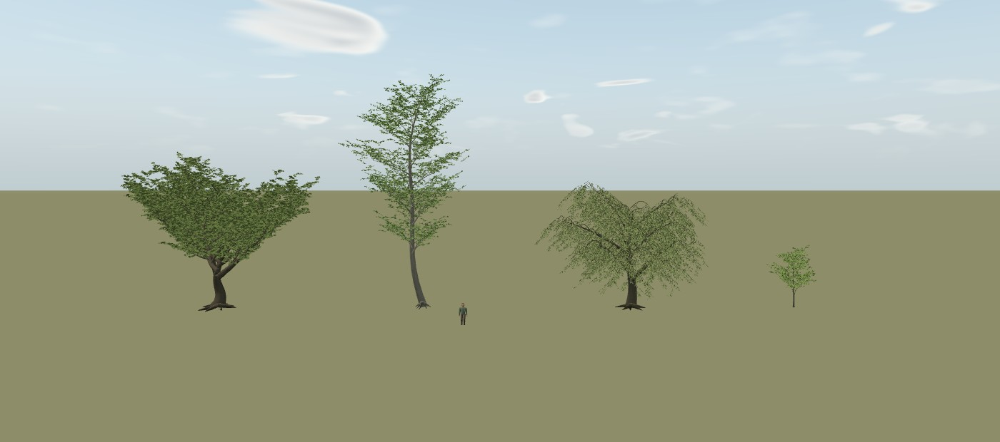
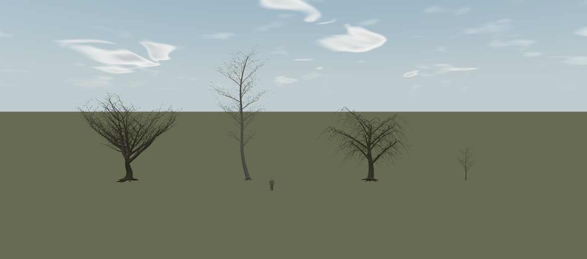
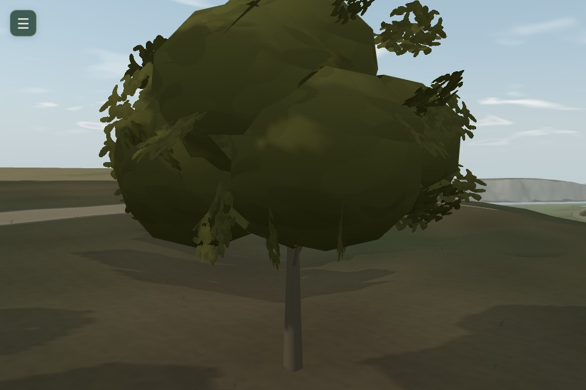
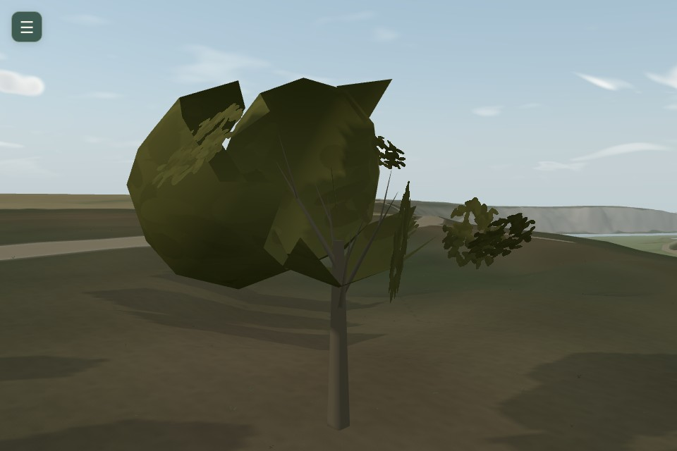
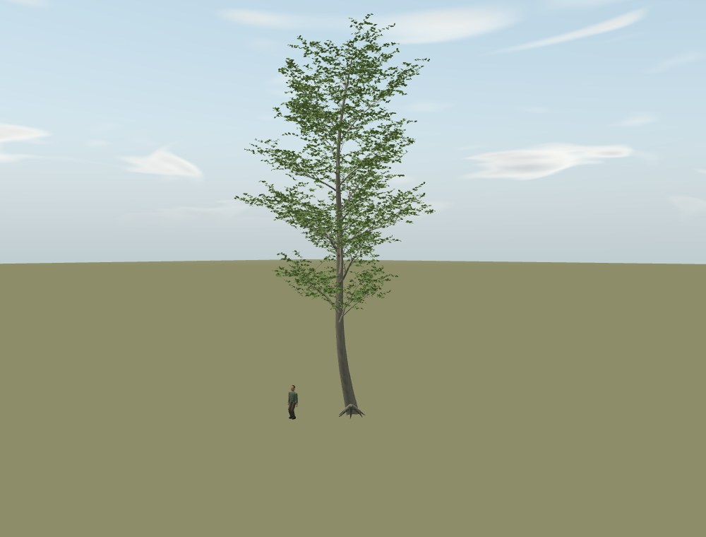
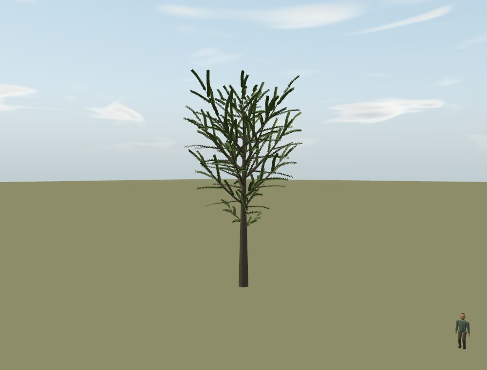

Des feuilles portées par une vraie ramure.
Quatre architectures proposées : un feuillu étalé, une cime élancée, un arbre de berge et un jeune sujet. Captures du vrai moteur Three.js, sans image générée. Les arbres détaillés restent des références artistiques isolées.
Validation artistique attendue · 17B non commencé
Comparer dans le paysage du jeu
Même ancrage, même caméra et même climat dans chaque paire. Les autres arbres sont masqués pour isoler le sujet. La lumière du ciel et du soleil est conservée ; le cache d’ombres fines M14 est désactivé dans les deux variantes pour ne pas attribuer ses anciennes silhouettes aux nouveaux arbres. Les grands sujets peuvent dépasser du cadre à 5 et 15 m.
Face, profil, trois quarts et dessous
Atelier synthétique à échelle métrique ; éclairage, calendrier et vent du jeu. Le promeneur est le modèle existant, à son échelle native. Sélectionner un arbre ci-dessus puis une saison ci-dessous.
La même échelle, quatre silhouettes

Voir les quatre ramures hivernales

Pourquoi les anciens bouquets se détachent


Le diagnostic porte sur ce cas reproduit. Les cinq captures évoquées dans la mission n’étaient pas jointes au texte reçu. Géométrie, groupes saisonniers et LOD inspectés.
Observer les attaches dans le vent
Deux inspections natives du jeune sujet, 7,2 et 8,0 secondes, sans accélération ni bande-son ajoutée. La cadence logicielle reste limitée ; ces extraits ne valident pas le naturel de l’animation finale.
Une alternative réellement générée


Même scène, palette et caméra relative. Formes et densités différentes : ce n’est pas un classement de qualité à budget égal. Sapling pourrait être mieux calibré. Modular Tree a été étudié sur sa documentation et ses sources, sans génération exécutée. Sources et droits.
Coûts et limites avant toute généralisation
Les modèles de référence comportent environ 45 000 à 377 500 triangles par arbre. Ils n’utilisent ni sphère de couronne, ni texture de feuillage, ni armature CPU par arbre. Leur coût logiciel augmente nettement. Les LOD de production, la densification, l’adaptation des ombres et de la neige et la promenade prolongée restent les jalons ultérieurs.
Mesures par profil · Préservation des fichiers existants